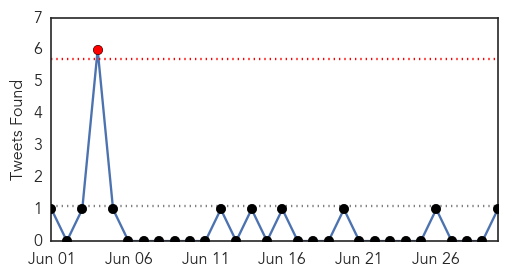
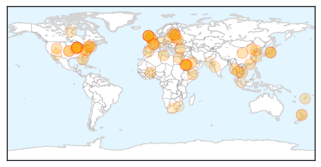
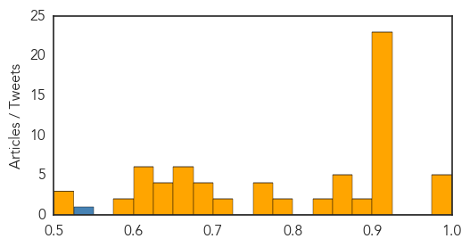
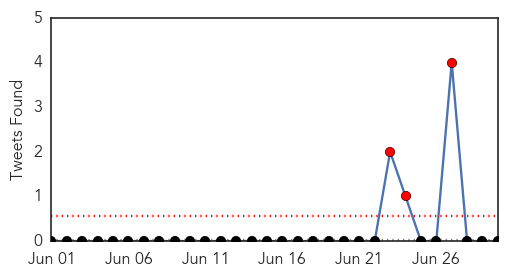
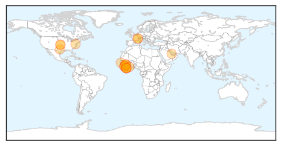

Unknown
30-Day Web Trend
0 alerts, 0 warnings

30-Day Twitter Trend
0 alerts, 0 warnings

Article Locations
Article Confidences
Top Articles:
- 0.999
- Surge In MERS In Saudi Arabia
- 0.999
- Investigators Say Saudi Arabia Contributed To Spread Of Deadly MERS Virus
- 0.991
- Gulf Daily News World News Saudi bolsters Mers fight plan
- 0.986
- INTERVIEW-Patients recruited for vital studies on Saudi MERS virus
- 0.984
- INTERVIEW-Patients recruited for vital studies on Saudi MERS virus
- 0.917
- Chicago Tribune
- 0.917
- Chicago Tribune
- 0.917
- Chicago Tribune
- 0.917
- Chicago Tribune
- 0.917
- Chicago Tribune
- 0.917
- Chicago Tribune
- 0.917
- Chicago Tribune
- 0.917
- Chicago Tribune
- 0.917
- Chicago Tribune
- 0.917
- Chicago Tribune
- 0.917
- Chicago Tribune
- 0.917
- Chicago Tribune
- 0.917
- Chicago Tribune
- 0.917
- Chicago Tribune
- 0.917
- Chicago Tribune
- 0.917
- Chicago Tribune
- 0.917
- Chicago Tribune
- 0.917
- Chicago Tribune
- 0.917
- Chicago Tribune
- 0.917
- Chicago Tribune
- 0.914
- Patients recruited for vital studies on MERS
- 0.910
- The world windows to Thailand
- 0.906
- Leprosy cases in Britain may be 'misdiagnosed'
- 0.885
- No Signs Of Anthrax Contamination After Centers For Disease Control Lab Safety Issue
- 0.876
- Leprosy cases in Britain may be misdiagnosed, doctors are warned
- 0.866
- News, Information and Connections for Action
- 0.866
- Oil catches fire after pipeline bursts in China's Dalian
- 0.866
- China accuses former senior military official of graft- Xinhua
- 0.866
- Small forest fires are pictured between pine trees at night at Sierra de Tejeda nature park, on a burnt mountain from El Collado mountain pass, near the town of Competa
- 0.866
- Police officer killed in explosion near Egypt's presidential palace
- 0.838
- Leprosy still exists in UK despite beliefs it was wiped out decades ago but doctors are missing it
- 0.838
- State of emergency planned in Latvia amid swine fever outbreak
- 0.789
- Latvia orders pig cull to stem African swine fever
- 0.787
- Penang boy believed to have caught disease while camping - Nation
- 0.769
- Otago Daily Times Online News : Otago, South Island, New Zealand & International News
- 0.767
- Leprosy is still present in Britain and often misdiagnosed, say experts
- 0.762
- Ministry to confirm cause of death
- 0.756
- Vermont recommending HIV testing
- 0.715
- SYLVANT™ (siltuximab) Receives FDA Approval to Treat Multicentric Castleman’s Disease (MCD)
- 0.713
- No new cases of African swine fever registered in Latvia :: The Baltic Course
- 0.699
- Funding cut shuts pain unit
- 0.693
- Facebook under fire for manipulating users' emotions
- 0.692
- Take care of your mouth and live healthier, says expert
- 0.685
- Ukraine’s Poroshenko ends ceasefire with pro-Russia rebels
- 0.667
- Boy in Penang confirmed to be suffering from JE - Nation
Showing top 50 articles...
Top Tweets:
- 0.854
- Flawed Saudi Response Fueled Outbreak of MERS, Middle East Virus http://t.co/KOGkyxcoLF @nytimes
- 0.619
- NYTimes on MERS: “Flawed Saudi Response Fueled Outbreak of MERS”. Harsh but needed. http://t.co/VZppEaE9S7
Ebola
30-Day Web Trend
4 alerts, 5 warnings

30-Day Twitter Trend
5 alerts, 0 warnings

Article Locations
Article Confidences

Top Articles:
- 1.000
- Could Ebola spread to the United States?
- 1.000
- Liberian President Warns Against Hiding Ebola Patients
- 1.000
- Liberian president warns against hiding Ebola patients
- 1.000
- West African nations should be prepared for Ebola: WHO expert
- 1.000
- Winona Daily News
- 1.000
- Liberia vows prosecution for hiding Ebola patients amid regional epidemic
- 0.999
- Risk of Ebola spread in west Africa, WHO warns
- 0.999
- 182 die from ebola in Guinea, says health officer
- 0.999
- Ebola outbreak needs urgent action
- 0.999
- WHO provides expertise to combat ebola outbreak
- 0.998
- West Africa can’t manage the Ebola outbreak
- 0.998
- U.S. groups provide relief from Ebola in West Africa
- 0.998
- Ebola outbreak 'not out of hand', UN health agency says readying response
- 0.995
- Brother's Brother Foundation Calls for Donations to Cope With West Africa Ebola Outbreak
- 0.993
- Liberia warns against hiding Ebola patients
- 0.981
- TB, swine flu assaulting border agents
- 0.973
- Samaritan's Purse sending Canadian medical specialists to Liberia to fight deadly Ebola virus
- 0.964
- UNICEF-Liberia Ebola Virus Disease: SitRep #30, 30 June 2014 - Liberia
- 0.939
- Humanitarian funding analysis: Ebola outbreak in Sierra Leone - Sierra Leone
Top Tweets:
-
No tweets found for Jun 30, 2014